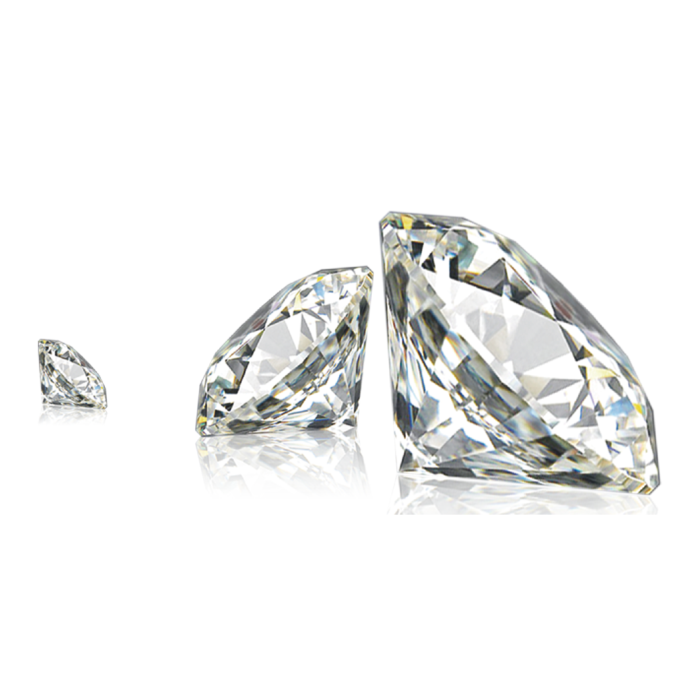

Formed by Riot Games, K/DA is a four-member virtual girl group that connects the League of Legends universe to Korean-pop music. At the 2018 World Championship Opening Ceremony in Incheon, South Korea, K/DA exploded into the music scene with their debut single “POP/STARS.” As a group heavily inspired by both American and Korean pop influences, K/DA has garnered over 550 million views on their music videos. In 2020, the group released their five-track EP called "All Out," featuring songs like "The Baddest" and their lead single, "More."
The four girls of K/DA continue to draw massive attention from fans all around the world, bridging the gap between music and gaming for League of Legends. "Our songs are for you to remember—always be true to yourself," says the leader, Ahri. K/DA hopes to take their music to larger stages in the future through a global tour.
Social Media
Twitter
Instagram
TikTok